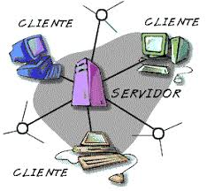

PROGRAMACION DE LAPSO 2018---2019
PROGRAMACION DE LAPSO 2021---2022
BREVE HISTORIA DEL INTERNET
PROGRAMACION DE LAPSO 2018---2019
PROGRAMACION DE LAPSO 2021---2022
BREVE HISTORIA DEL INTERNET
Cuando en los años 1980 la blue dejó de tener interés militar, pasó a otras agencias que ven en ella interés científico. En Europa las redes aparecieron en los años 1980, vinculadas siempre a entornos académicos, universitarios. En 1989 se desarrolló el World Wide Web (www) para el Consejo Europeo de Investigación Nuclear. En España no fue hasta 1985 cuando el Ministerio de Educación y Ciencia elaboró el proyecto IRIS para conectar entre sí todas las universidades españolas.
Las principales características “positivas” de Internet es que ofrece información actualizada, inmediatez a la hora de publicar información, una información personalizada, información interactiva e información donde no hay límites ni de espacio ni de tiempo.
1. Nos mantiene informados
2. Podemos estudiar en linea
3. Muy facil de usar
4.Podemos comunicarnos con todo el planeta
5.Es posible la creación y descarga de software libre, por sus herramientas colaborativas
6.Es posible compartir muchas cosas personales o conocimientos que a otro le puede servir, y de esa manera, se vuelve bien provechoso
7.Es posible comprar fácilmente y vender cualquier producto
8.Es posible generación de nuevos empleos.
9.La computadora se actualiza periódicamente más fácil
10.Acceso a nuevos formatos de entretenimiento.
1.Es el la principal fuente de la piratería
2.Dependencia de procesos. si hay un corte de internet, hay muchos procesos que se quedan varados por esa dependencia.
3.Podemos ser víctimas de robo y estafa.
4.Podemos ser victimas de secuestro
5. Te genera una gran dependencia o vicio del internet, desnudándote de muchas cosas personales o laborales.
6. Hace que los estudiantes se esfuercen menos en hacer sus tareas, debido a la mala práctica del copy/paste
7. Así como es de fácil encontrar información buena, es posible encontrar de la misma forma información mala, desagradable (pornografía, violencia explícita, terrorismo) que puede afectar especialmente a los menores.
8. Nos induce a la ‘pornografía infantil
9. Limita la comunicación cara a cara.
10. Delincuencia digital y acoso en linea
1_.ES UNIVERSAL:
EL Internet está extendida prácticamente por todo el mundo.
2_.ES FÁCIL DE USAR:
No es necesario saber informática para usar Internet. .
3_.ES VARIADA:
En Internet se puede encontrar casi de todo, y si hay algo útil que falte, el que se dé cuenta se hará rico.
4_.ECONÓMICA
En Internet el ahorro de tiempo y dinero es impresionante.
5_.ES ÚTIL:
Disponer de mucha información y servicios rápidamente accesibles .
6_.ES ANÓNIMA:
Podemos decir que ocultar la identidad, tanto para leer como para escribir, es bastante sencillo en Internet.
7_.AUTORREGULADORA:
ES ¿Quién decide cómo funciona Internet? Algo que tiene tanto poder como Internet y que maneja tanto dinero no tiene un dueño personal.
1_.CLIENTE :
Es el encargado de hacerle la petición al servidor
2_.MODEM:
Dispositivo que convierte señales digitales, provenientes de un puerto serial de una computadora , en señales análogas las cuales viajar sin dificultad a través de líneas telefónicas ; de igual manera, toma las señales provenientes de un medio análogo y las convierte en señales digitales entendibles por el computador al cual está conectado.
3_.MEDIOS GUIADOS:
Son aquellos que tienen algun medio físico conectados a sus extremos ejemplo el avast de cantv
4_. METODOS NO GUIADOS :
Son aquellos que no tienen ningun medio fisico conectado a sus extremos ejemplo los bam de movistar dijiter movilnet
5_.SERVIDOR::
ES un computador grande compartido en blue que almacena y distribuye diferentes tipos de archivos informáticos entre los clientes de una blue de computadoras

En la actualidad evaluaciones sobre a calidad educativa de los alumnos que egresan de la escuela media han demostrado que la mayoría no comprenden bien lo que leen y tienen serias deficiencias es poder razonar eficientemente. Por eso deben tener bien en cuenta la forma como la Internet puede mejorar la calidad del educando ya que este se puede en algunos casos revertir en su contra ya que por lo fácil que es acceder a esta fabulosa herramienta los adolescentes no se detienen a analizar ni a interpretar lo que allí se les trata de empeñar. Es de suma importancia que las personas que no estén capacitadas para elaborar con eficiencia, creativamente, lo cuantiosa y variada información que pueden obtener en Internet, no podrán utilizar en forma óptima este extraordinario instrumento, verán empobrecido el proceso de convertir la información en conocimiento, en su desempeño laboral a nivel de ignorancia que ello produce permite hablar de un tipo de analfabeto que será cada vez más rechazado en los ámbitos laborales. Respecto de la enseñanza formal, Internet puede ser útil de tres maneras: * Como apoyo a la enseñanza tradicional; * Como complemento a ella; * Como sustituto de esa enseñanza escolarizada o presencial.
El internet se inició en torno al año 1969, cuando el Departamento de Defensa de los EE.UU desarrolló ARPANET, una blue de ordenadores creada durante la Guerra Fría cuyo objetivo era eliminar la dependencia de un Ordenador Central, y así hacer mucho menos vulnerables las comunicaciones militares norteamericanas.Tanto el protocolo de Internet como el de Control de Transmisión fueron desarrollados a partir de 1973, también por el departamento de Defensa norteamericano.
VENTAJAS DEL INTERNET
DESVENTAJAS DEL INTERNET
CARACTERISTICAS DEL INTERNET
COMO SE TRANSMITE EL INTERNET
IMPORTANCIA DEL INTERNET
Así como todo, hay cosas buenas y cosas malas, así que hay que saber equilibrar nuestro uso del internet para que sea provechoso en nuestra vida y saber las Ventajas y Desventajas del Internet. Importancia de la "Internet en la Educación". El Internet es una "blue de redes" es decir una blue que no sólo interconecta computadoras, sino que interconecta redes de computadoras entre si… (Artículos historia.htm) Por otra parte, la educación proviene del latín educare. Y es un proceso de promover conocimientos y las normas de cortesía de una persona. * Es el proceso bidireccional mediante el cual se transmite conocimientos, valores, costumbres y formas de actuar. A través del uso del Internet se posibilita, por primera vez en la historia de la educación que la mente quede liberada de tener que retener una cantidad enorme de información. Sólo es necesario comprende los conceptos sobre la dinámica de los procesos en las cuales una información está encuadrada, ello permite utilizar métodos pedagógicos con los cuales el alumno puede aprender más y mejor en un año lo que requería tres. Ahora los docentes pueden destinar su esfuerzo y el de los alumnos en desarrollar más las capacidades mentales que les posibiliten a los estudiantes poder comprender adecuadamente la información y elaboración creativamente pudiendo así producir una calidad superior de razonamiento.